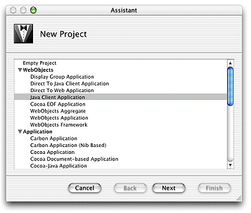
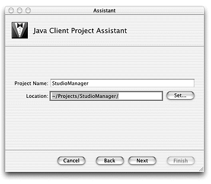
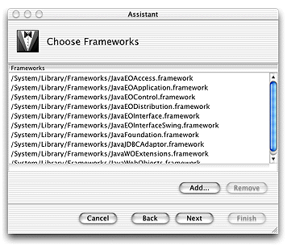
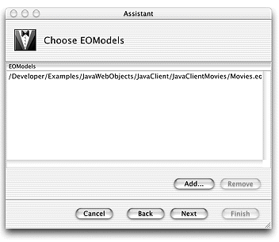
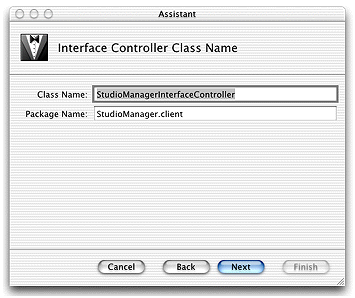
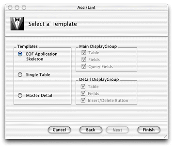

| PATH |

Every Java Client application starts out as a project. A project is a repository for all the elements that go into the application, such as source code files, frameworks, libraries, packages, the application's user interface, sounds, and images. You use the Project Builder application to create and manage projects.
Navigate to /Developer/Applications and
launch Project Builder.
Choose File > New Project
Select Java Client Application.
Click Next.
Name the project StudioManager.
Click Set and select the folder where you want the project placed.
Click Next.
The Choose Frameworks pane allows you to add frameworks to your project, but no additional frameworks are required for this tutorial.
Click Next.
The Choose EOModels pane allows you to add the model to be used in your project.
Click Add.
If you defined your own Movies model, navigate
to the folder where you stored it. Otherwise, you can use the Movies
model included in one of the example projects. Navigate to /Developer/Examples/JavaWebObjects/JavaClient/JavaClientMovies.
Select Movies.eomodeld and
click Choose.
Click Next.
The Interface Controller Class Name pane lets you change the class name and package name of the interface controller. You'll use the default name so click Next.
Make sure that the EOF Application Skeleton template is selected.
Click Finish to create the project.

© 2001 Apple Computer, Inc.